# Definir a ordem desejada (hierarquia educacional)
ordem_instrucao <- c(
"Fundamental incompleto",
"Fundamental completo",
"Médio incompleto",
"Médio completo",
"Superior incompleto",
"Superior completo",
"Pós-graduação",
"Mestrado",
"Doutorado"
)
# Criar função de mapeamento
mapear_instrucao <- function(x) {
case_when(
x == "ANALFABETO" ~ "Analfabeto",
x %in% c("ATE 5.A INC", "5.A CO FUND", "6. A 9. FUND") ~ "Fundamental incompleto",
x %in% c("FUND COMPL") ~ "Fundamental completo",
x == "MEDIO INCOMP" ~ "Médio incompleto",
x == "MEDIO COMPL" ~ "Médio completo",
x == "SUP. INCOMP" ~ "Superior incompleto",
x == "SUP. COMP" ~ "Superior completo",
x == "MESTRADO" ~ "Mestrado",
x == "DOUTORADO" ~ "Doutorado",
TRUE ~ "Não informado" # Para quaisquer outros valores
)
}
# Aplicar mapeamento e converter para fator ordenado
rais <- rais %>%
mutate(
grau_instrucao_apos_2005 = mapear_instrucao(grau_instrucao_apos_2005),
grau_instrucao_apos_2005 = factor(
grau_instrucao_apos_2005,
levels = ordem_instrucao,
ordered = TRUE
)
)
# Verificar resultado com contagem
# rais |>
# count(grau_instrucao_apos_2005) |>
# arrange(grau_instrucao_apos_2005)Mercado de Trabalho no Setor Portuário
Uma análise comparativa entre Santos, Cubatão e Guarujá
Introdução
O setor portuário brasileiro impacta direta e indiretamente a economia do país.
O Observatório Portuário apresenta neste relatório uma síntese da evolução do Trabalho Portuário e Aquaviário no Brasil e no Maranhão entre 2020 e 2024.
Trata-se de um setor abrangente e com atividades diversas como instalações portuárias, embarcações mercantes, de passageiros, pesca, atividades em plataformas marítimas e de repação naval que movimentam inúmeras cadeias produtivas e setores econômicos.
Espera-se que as informações apresentadas (a metodologia está disponível na última seção) possam auxiliar o debate no setor e subsidiar a elaboração de políticas de gestão públicas e privadas.
Este é o primeiro de uma série de quatro relatórios sobre o mercado de trabalho portuário e aquaviário brasileiro e maranhense.
Boa leitura.
Panorama do trabalho no setor portuário e aquaviário no Brasil
As estratégias para o setor Portuário e Aquaviário influenciaram o estoque de empregos no setor, sobretudo ao considerar as mudanças regulatórias e ciclos de investimento.
Ao considerar os dados mais recentes, verifica-se que foram registrados 76.350 vínculos (vínculos são unidades de emprego. Uma pessoa pode ter mais de um vínculo, por exemplo) no setor portuário e aquaviário no Brasil em 2024, de acordo com os dados da Relação Anual de Informações Sociais (RAIS).
O número apresenta um decréscimo em relação aos anos anteriores, sobretudo em relação ano de 2018, quando quase 80 mil vínculos foram registrados. Considerando a tendência de queda do número de vínculos identificada a partir de 2014, reitera-se a associação entre desempenho das atividades econômicas do país e sua influência no estoque de empregos do setor.
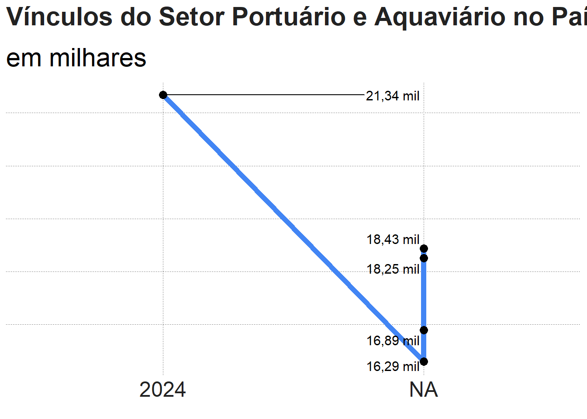
Ao analisar os dados por setor de atividade no contexto nacional, verifica-se redução do número de vínculos no grupo de profissionais atuantes no Transporte Aquaviário, com uma redução de 44.420 vínculos em 2013 para 37.910 em 2024, com uma redução de 6.510 vínculos.
Por outro lado, nota-se que o grupo de atividades agrupadas como Armazenamento e Atividades Auxiliares dos Transportes apresentou um comportamento crescente no período, superando em 2024 o número de vínculos no Transporte Aquaviário.
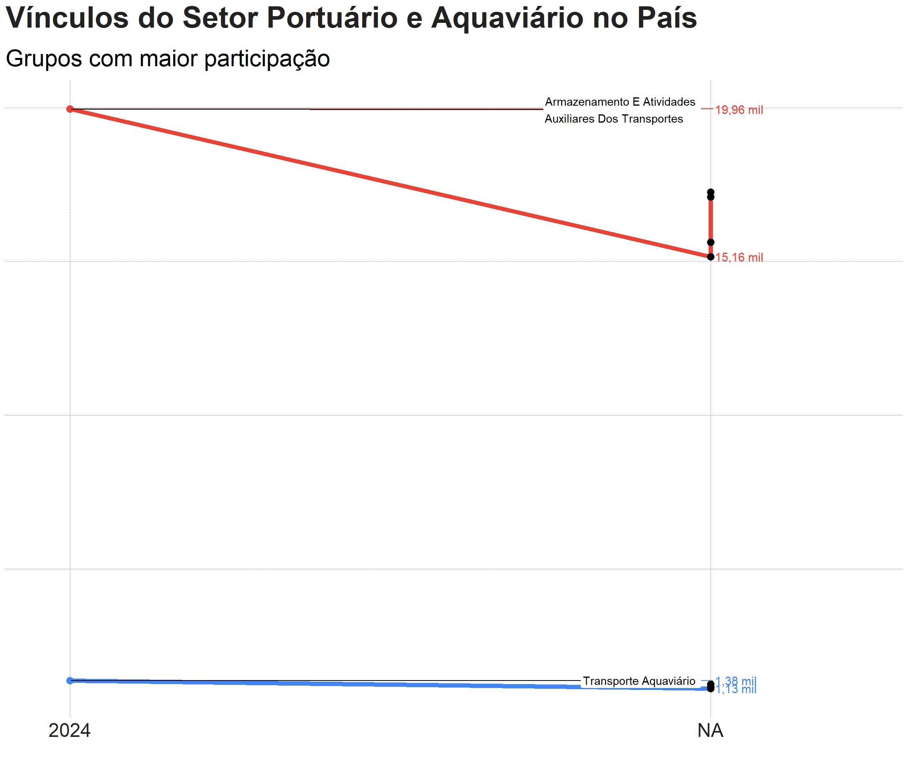
Ao analisar os grupos de atividades com maior participação no número de vínculos empregatícios, destacam-se as atividades de Armazenamento e Atividades Auxiliares dos Transportes e Transporte Aquaviário.
O Armazenamento e Atividades Auxiliares dos Transportes compreende, de acordo com a Classificação Nacional de Atividades Econômicas-CNAE, atividades relacionadas
[…] com a movimentação e o armazenamento de cargas, antes ou depois de seu transporte, ou entre segmentos de transporte de distintas modalidades, as atividades auxiliares das diversas modalidades de transporte envolvendo a operação da infraestrutura de suporte nas rodovias, ferrovias, aeroportos, portos, pontes túneis, etc. e as atividades de agenciamento de transporte. Esta divisão compreende também as atividades relacionadas à organização do transporte de carga.
Destaque também deve ser dado para o número de vínculos do **Transporte Aquaviário**, cujas atividades são as relacionadas aos transportes de pessoas e mercadorias, além das embarcações turísticas e o fretamento de embarcações com tripulação. Nela também estão as operações e embarcações para apoio marítimo e portuário.
No gráfico a seguir estão detalhados os vínculos e atividades contemplados no Transporte Aquaviário no país.
Com o recorte, verifica-se que as atividades de Navegação de Apoio apresentam o maior número de vínculos, registrando em 2024 18.237 empregos. A categoria abarca atividades como:
o transporte de mercadorias e pessoas para suprimento e apoio a navios e a plataformas de pesquisas e exploração de minerais e hidrocarbonetos;
a navegação realizada para apoio logístico a navios e a plataformas de exploração de minerais e hidrocarbonetos transporte;
a navegação realizada nos portos e terminais aquaviários, para atendimento a embarcações e instalações portuárias;
os serviços de reboque realizado por empresas de apoio marítimo;
os serviços de socorro e salvamento realizado por empresas de apoio portuário.
Observa-se que o grupo de Transporte por Navegação Interior, segundo maior grupo em número de vínculos no Transporte Aquaviário, finalizou 2024 com 11.488 vínculos. São atividades como o transporte de carga municipal, por rios, canais, lagos, lagoas, baias e outras vias de navegação interior, exceto travessia e o fretamento de embarcações com tripulação, mas não inclui a operação e gestão de terminais de carga.
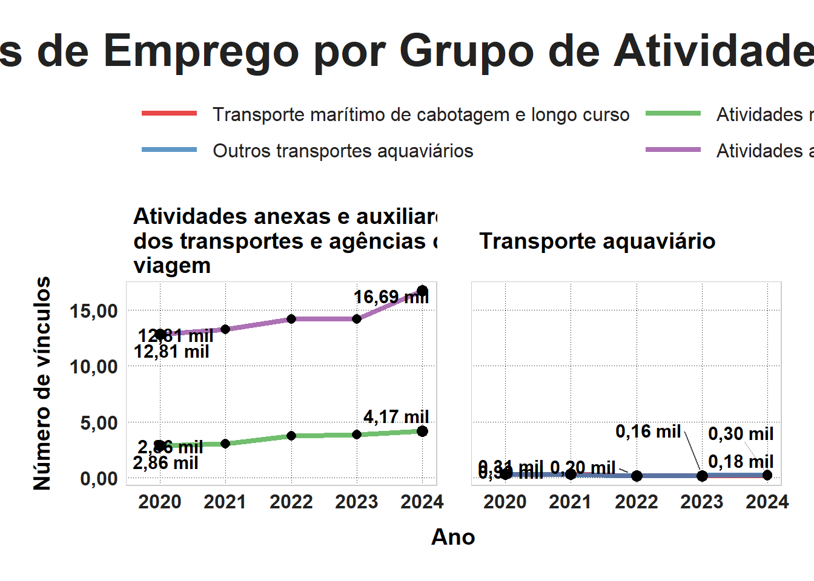
Esses dados podem detalhados um pouco mais a partir da análise das seções da Classificação Nacional de Atividades Econômicas (CNAE) do Instituto Brasileiro de Geografia e Estatística (IBGE), o que permite identificar quais áreas impactaram diretamente o estoque de empregos na área portuária e aquaviária.
Pelo gráfico a seguir, alguns destaques do setor podem ser obtidos por grupo de atividade (definições de cada categoria no glossário):
- Ao considerar a Gestão de Portos e Terminais, o destaque foi para as Operações de Terminais, que apresentou número crescente de vínculos entre 2020 e 2024, registrando 35.357 vínculos. Por outro lado, as atividades de Administração da Infra-estrutura Portuária tiveram um declínio de 41,25%, resultado da destruição de 2.170 vínculos .
São atividades como as atividades da administração da estrutura portuária, tais como o balizamento da área portuária, a manutenção da dragagem e das condições físicas do porto, as atividades de operação de terminais marítimos e fluviais, de uso público ou privado, o armazenamento no parque portuário de mercadorias provenientes ou destinadas às embarcações e a operação e gestão de equipamentos destinados a carga e descarga, bem como a carga e descarga de embarcações, não ficando de fora as atividades realizadas pelos operadores portuários.
- O Transporte Marítico de Carga por Cabotagem, por sua vez, teve uma redução drástica de vínculos: saiu de 8.289 em 2020 para 3.316 em 2024.
Trata-se, portanto, de atividades como o transporte marítimo de carga realizado entre portos ou pontos do território brasileiro utilizando a via marítima, incluindo o fretamento de embarcações com tripulação para o transporte de cabotagem de carga.
O Transporte por Navegação Interior de Carga, por outro lado, apresentou leve aumento: passou de 7.524 para 8.382 vínculos. Essa categoria abarca as atividades de transporte de carga por rios, canais, lagos, lagoas, baías e outras vias de navegação interior, em percurso nacional ou internacional.
A Navegação de Apoio Marítimo, por sua vez, duplicou o número de vínculos e chegou a 15.372 profissionais na área. Isso significa que são profissionais que atuam em atividades de navegação realizada para o apoio logístico a embarcações e instalações em águas territoriais nacionais e na Zona Econômica, que atuem nas atividades de pesquisa de minerais e hidrocarbonetos.
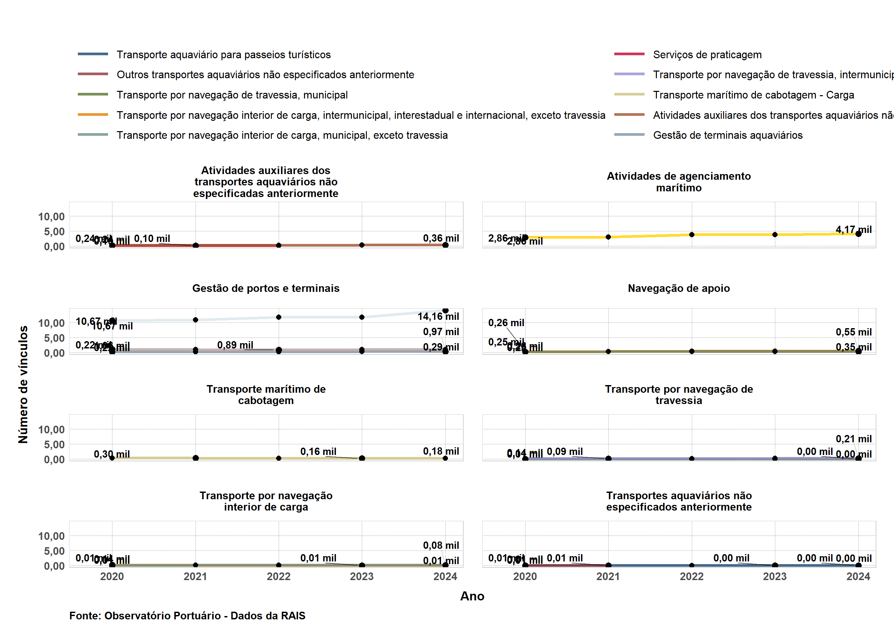
Os dados são um reflexo das políticas de regulação para o setor, evidenciando como as estratégias governamentais e empresariais se refletem no estoque de empregos no setor.
Na próxima seção os dados para Santos são apresentados.
Panorama do trabalho no setor portuário e aquaviário em Santos
Ao analisar os dados para o estado do Maranhão, verifica-se que os vínculos diretos foram ascendentes até o ano de 2017, quando foram identificados 2.016 vínculos. Em 2024, depois de quedas em 2018 e 2019, apresentou ligeira recuperação e o número de vínculos registrados foi de 1.924.
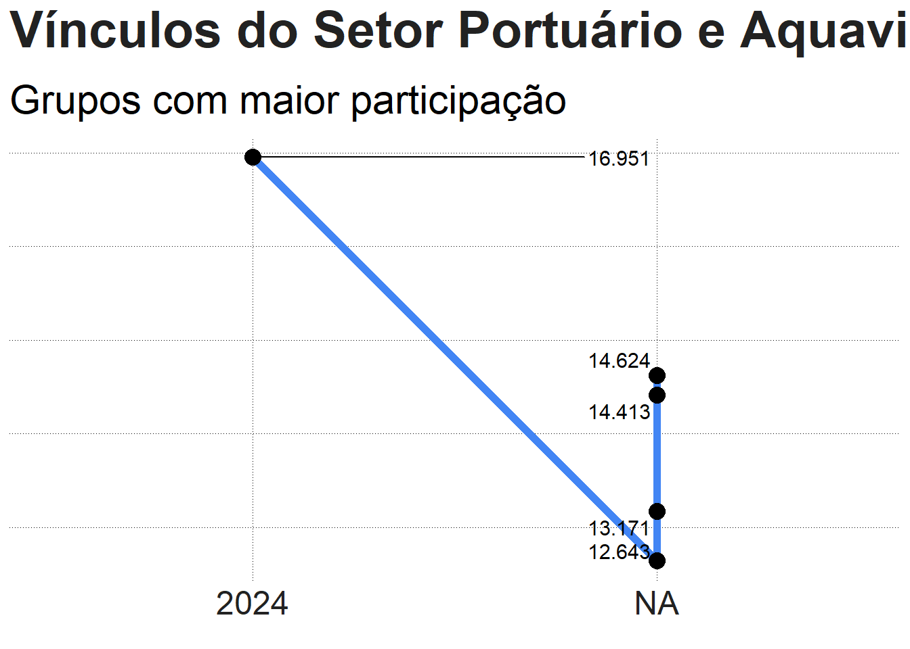
No caso do Maranhão, o Transporte Aquaviário é o grupo de atividade que apresenta o maior número de empregos diretos, com 1.000 vínculos em 2024.
Ao mesmo tempo, as atividades abarcadas pelo Armazenamento e Atividades Auxiliares dos Transportes apresentaram permanente crescimento no perído, o que se relaciona com o aumento das atividades portuárias no estado,com o registro de 920 vínculos em 2024.
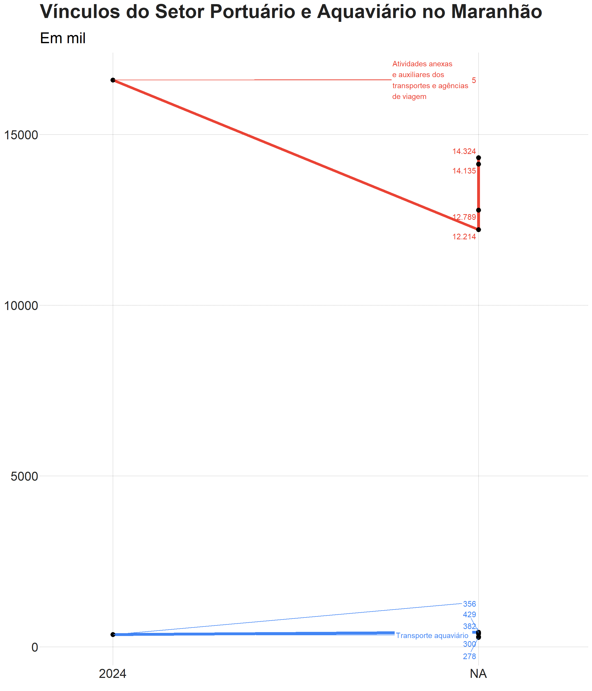
No gráfico a seguir pode-se observar as modalidades abarcadas pelo Transporte Aquaviário e suas representatividades no estado. O destaque positivo é para o setor de Navegação de Apoio, que auxilia as atividades portuárias.
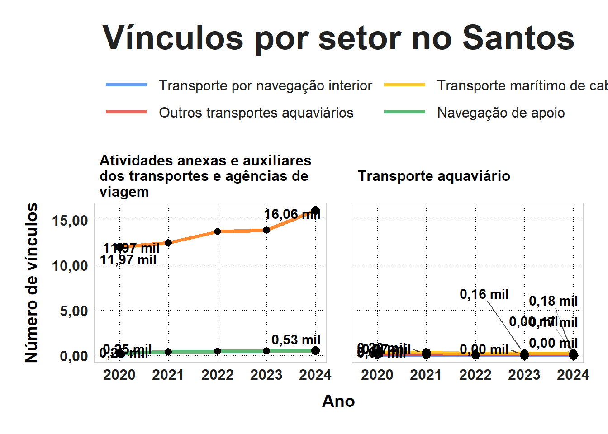
Ao analisar as subclasses de atividade, pode-se verificar que as atividades relacionadas a Operações de Terminais teve excelente resultado, saltando de 14 para 920 mil vínculos, o que indica uma transformação estrutural nas atividades.
A Navegação de Apoio Marítimo e Navegação de Apoio Portuário também se destacam, embora com oscilações consideráveis na série.
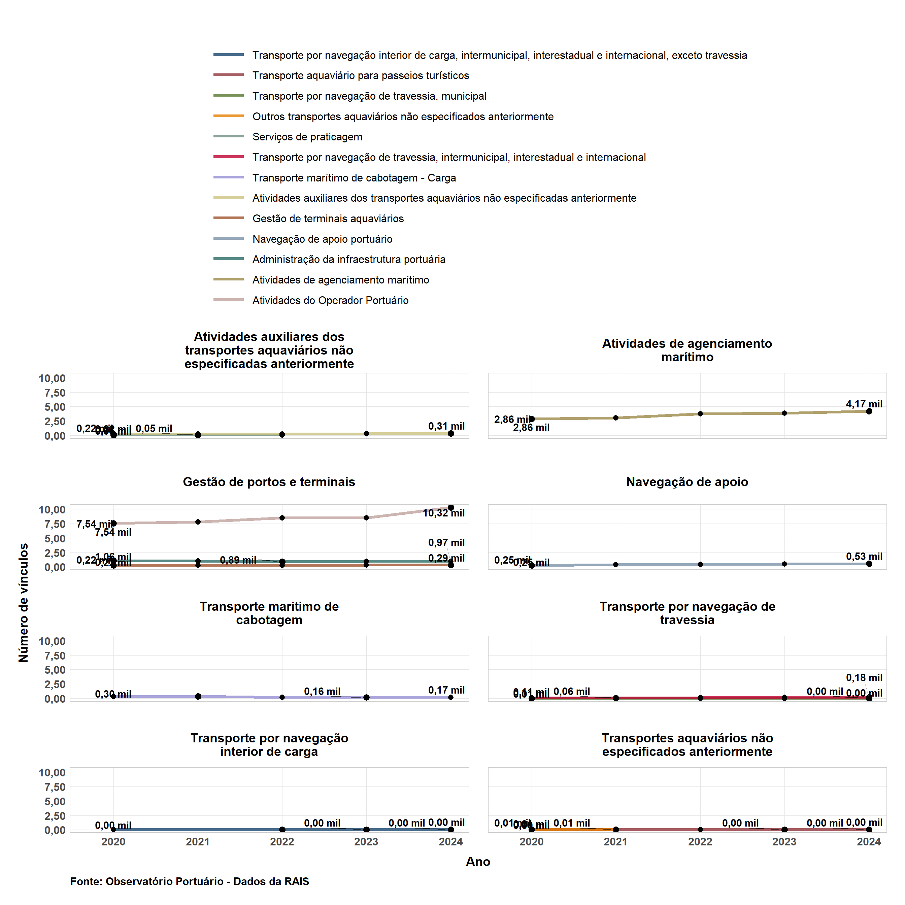
Perfil do Trabalhador Portuário e Aquaviário
Escolaridade do Trabalhador Portuário e aquaviário
Ao analisar o perfil dos trabalhadores portuários e aquaviários por sexo, observa-se que a participação masculina é predominante. Em 2024, do total de 76.317 vínculos, 65.735 eram homens, sendo apenas 10.582 mulheres (13,87%).
No Maranhão a proporção é igual: dos 1.924 vínculos, apenas 14% eram mulheres (2.629)
Apesar da baixa participação feminina no setor, observa-se que elas apresentavam maior escolaridade no contexto nacional: 44,5% tinham curso superior, contra 17,7% dos homens com a mesma escolaridade. De forma agregada, observa-se o aumento da escolarização entre 2020 e 2024, apesar do número de profissionais com pós-graduação ainda ser baixo.
Em 2024, a quantidade de ocupações que exigiam o ensino médio completo era de 58,57% (desses, 91,25% eram do sexo masculino e apenas 8,75% do sexo feminino), por outro lado, 21,4% das ocupações exigiam o Superior completo (desses, 71,19% eram do sexo masculino e 28,81% do sexo feminino)
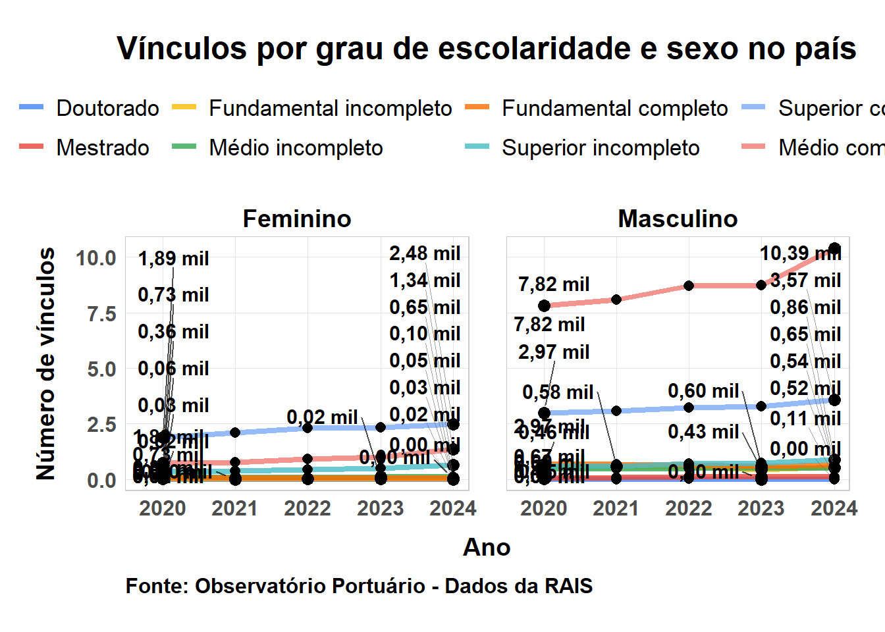
O Maranhão também acompanha a tendência nacional no quesito escolarização: há o predomínio de profissionais com ensino médio completo e, em seguida, ensino superior. Apesar de crescente, o número de pessoas com pós-graduação ainda é incipiente, como se observa no gráfico:
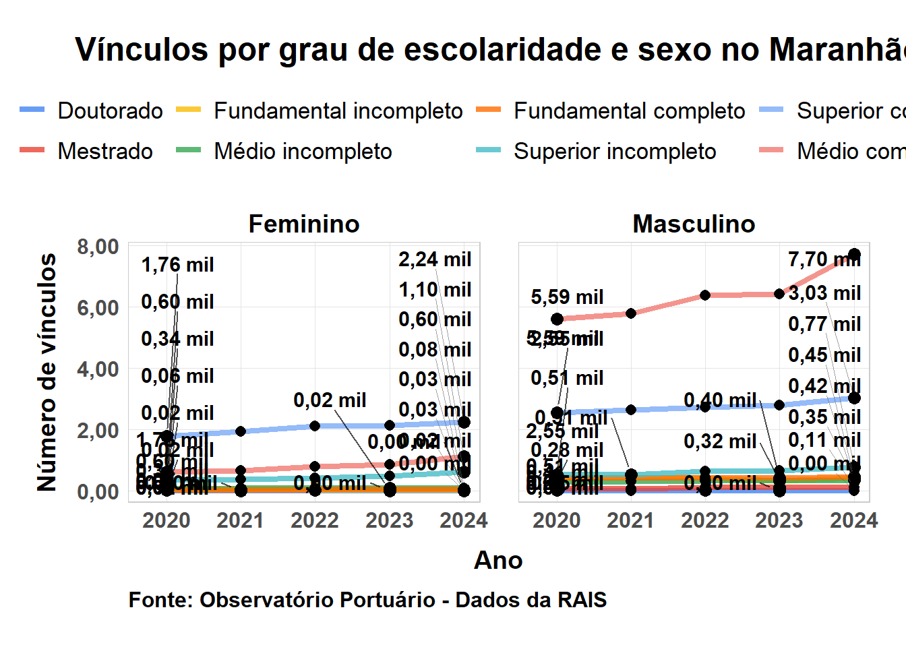
Ao avaliar a remuneração média por escolaridade no país, verifica-se que os profissionais com pós-graduação têm uma renda significativamente superior aos demais níveis de escolaridade.
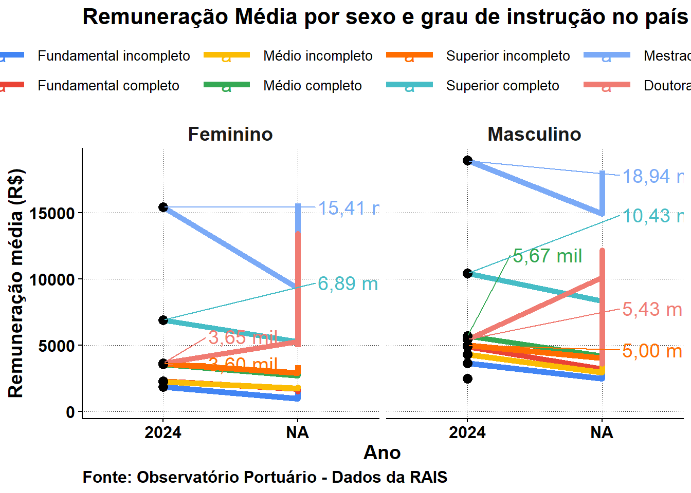
A renda do trabalhador maranhense segue a tendência nacional: profissional com pós-graduação aufere rendimentos bem superiores aos dos demais profissionais.

Raça ou cor do Trabalhador Portuário e Aquaviário
O perfil racial dos profissionais pode ser observado no gráfico a seguir1. Nota-se o predomínio de pardos e brancos, tanto entre os homens como entre as mulheres.
Destaca-se ainda o alto registro da ausência de identificação racial nos dados, o que é pauta para as ações de sensibilização dos profissionais de gestão com pessoas e alinhado às ações de Governança Social. O correto preenchimento dos dados pode auxiliar políticas de inclusão, qualificação e diversidade mais assertivas.

Apesar da destacada participação de pardos, a remuneração média desses profissionais em 2024 era inferior a dos brancos. Nota-se que homens e mulheres brancos tiveram a renda constante e crescente na série, mantendo a assimetria em relação aos pretos e pardos.
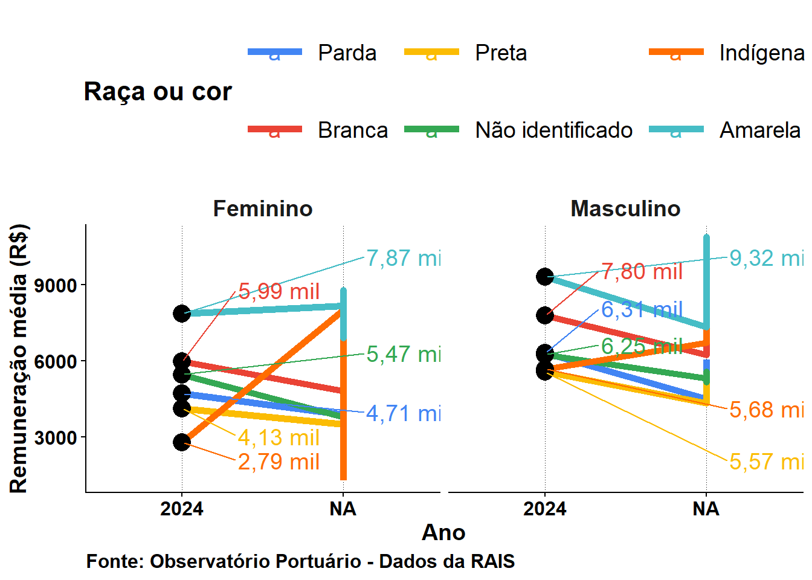
No Maranhão, os profissionais identificados como pardos predominam, sendo seguidos pelos brancos e pretos entre os homens e mulheres.
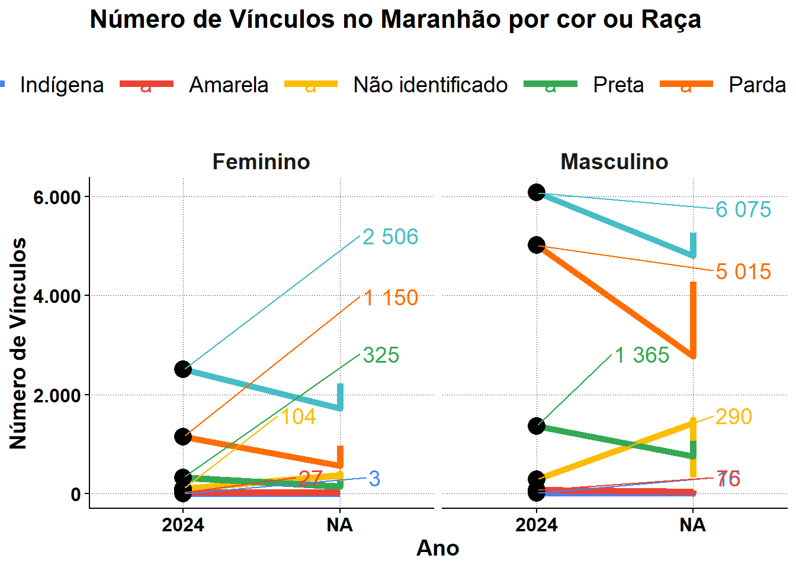
A renda dos trabalhadores por cor ou raça no Maranhão, por sua vez, evidencia que os autodeclarados amarelos se destacam entre os homens, com remuneração média acima das demais (amarelos, de acordo com o IBGE, são aqueles que se declaram de origem asiática: japoneses, coreanos e chineses).

Ocupações dos Trabalhadores Portuários e Aquaviários
As ocupações com maior participação no setor estão no gráfico a seguir, bem como a remuneração média respectiva.
Verifica-se que os profissionais Marinheiros de Convés (martítimo e fluvial) representam o maior contingente de profisisionais ao longo do período analisado, embora com tendência decrescente e em número inferior ao registrado em 2020.
São profissionais que, de acordo com o Códico Brasileiro de Ocupações (CBO), comandam e imediatam pequenas embarcações, auxiliando o comandante na admi nistração de bordo e no serviço de manobras; chefiam praça de máquinas; transportamcargas e passageiros; realizam manobras, serviços e manutenção no convés; operammáquinas; realizam manutenção preventiva e corretiva da praça de máquinas e apli cam procedimentos de segurança.
Por usa vez, os Assistentes Administrativos mantiveram uma estabilidade no número de vínculos, registrando cerca de 3.500 profissionais em 2024.

Remuneração dos Trabalhadores nos Estados
Verifica-se que a remuneração média dos trabalhadores portuários e aquaviários varia conforme o estado da federação. O Rio de Janeiro é o estado com a maior remuneração no período analisado, com o registro de R$ 8.5345 em 2024. O Espírito Santo aparece em segundo lugar, com R$ 6.112.
O estado do Maranhão teve uma evolução signifitiva no valor da remuneração média: saltou de R$ 2.090 em 2020 para R$ 4.765 em 2024.
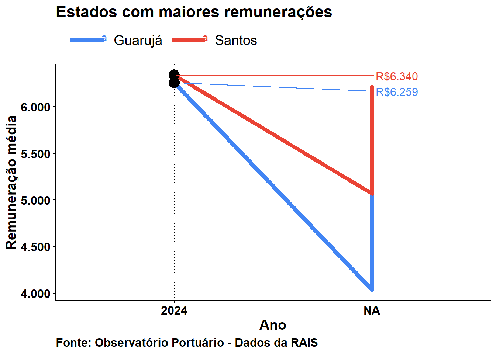
Remuneração dos Trabalhadores nos municípios
Ao analisar a remuneração média por município, o destaque positivo fica com os município de Macaé, Rio de Janeiro, São João da Barra e Itajaí que pagam as maiores remunerações, acima de 8 mil reais. No entanto, Macaé possui uma remuneração média superior ao segundo colocado em quase 3 mil reais.
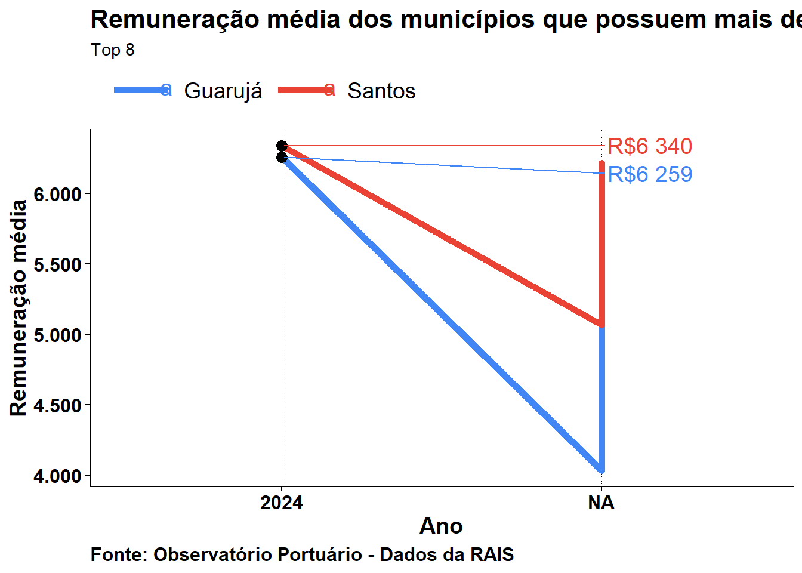
Trabalhadores da Gestão e Operação Portuária
Em 2020, o Brasil apresentou 16.290 vínculos de trabalho para a o setor portuário e aquaviário. Em 2024, ano com a maior quantidade de vínculos da série, foram 21.342 vínculos. No entanto, os dois anos seguintes ocorreram duas reduções na quantidade de vínculos. Com essas reduções, o ano 2024, último ano da série histórica, a quantidade de vínculos foi de 21.342. Quanto aos estados, São Paulo e Rio de Janeiro permanceram na primeira e segunda coloção durante toda a série. Em 2024, por exempo, Rio de Janeiro possuía 16.951 vínculos empregatícios e São Paulo, possuía cerca de 16.951. Por outro lado, o estado do Maranhão possuía 16.951 vínculos no último ano da série.

Notas Metodológicas
Este relatório analisa dados da Relação Anual de Informações Sociais (RAIS) – registro administrativo obrigatório enviado anualmente por organizações públicas e privadas ao Ministério da Economia. A RAIS cobre estabelecimentos formais e permite acompanhar o estoque de vínculos empregatícios, incluindo tanto servidores estatutários quanto trabalhadores celetistas.
A análise adota uma perspectiva longitudinal, cobrindo o período de 2024 a 2024, com foco no setor portuário do estado de São Paulo. Foram selecionados três municípios da Região Metropolitana da Baixada Santista – Santos, Cubatão e Guarujá – devido à sua relevância econômica e à concentração de atividades portuárias na região.
O recorte setorial foi realizado com base na Classificação Nacional de Atividades Econômicas (CNAE 2.0), adotada oficialmente pelo Sistema Estatístico Nacional. A CNAE organiza as atividades em cinco níveis hierárquicos – Seções, Divisões, Grupos, Classes e Subclasses –, permitindo identificar com precisão os segmentos relacionados ao transporte aquaviário e às atividades portuárias auxiliares.
A seleção das subclasses CNAE considerou especificamente as atividades de transporte marítimo, navegação interior, apoio portuário, gestão de terminais e demais serviços auxiliares, conforme detalhado abaixo:
- H - TRANSPORTE, ARMAZENAGEM E CORREIO
- 50 - TRANSPORTE AQUAVIÁRIO
- 50.1 - Transporte marítimo de cabotagem e longo curso
- 50.11-4 - Transporte marítimo de cabotagem
- 5011-4/01: Transporte marítimo de cabotagem - carga
- 5011-4/02: Transporte marítimo de cabotagem - passageiros
- 50.12-2 - Transporte marítimo de longo curso
- 5012-2/01: Transporte marítimo de longo curso - carga
- 5012-2/02: Transporte marítimo de longo curso - passageiros
- 50.11-4 - Transporte marítimo de cabotagem
- 50.2 - Transporte por navegação interior
- 50.21-1 - Transporte por navegação interior de carga
- 5021-1/01: Transporte por navegação interior de carga, municipal, exceto travessia
- 5021-1/02: Transporte por navegação interior de carga, intermunicipal, interestadual e internacional, exceto travessia
- 50.22-0 - Transporte por navegação interior de passageiros em linhas regulares
- 5022-0/01: Transporte por navegação interior de passageiros em linhas regulares, municipal, exceto travessia
- 5022-0/02: Transporte por navegação interior de passageiros em linhas regulares, intermunicipal, interestadual e internacional, exceto travessia
- 50.21-1 - Transporte por navegação interior de carga
- 50.3 - Navegação de apoio
- 50.30-1 - Navegação de apoio
- 5030-1/01: Navegação de apoio marítimo
- 5030-1/02: Navegação de apoio portuário
- 5030-1/03: Serviço de rebocadores e empurradores
- 50.30-1 - Navegação de apoio
- 50.9 - Outros transportes aquaviários
- 50.91-2 - Transporte por navegação de travessia
- 5091-2/01: Transporte por navegação de travessia, municipal
- 5091-2/02: Transporte por navegação de travessia intermunicipal, interestadual e internacional
- 50.99-8 - Transportes aquaviários não especificados anteriormente
- 5099-8/01: Transporte aquaviário para passeios turísticos
- 5099-8/99: Outros transportes aquaviários não especificados anteriormente
- 50.91-2 - Transporte por navegação de travessia
- 50.1 - Transporte marítimo de cabotagem e longo curso
- 52 - ARMAZENAMENTO E ATIVIDADES AUXILIARES DOS TRANSPORTES
- 52.3 - Atividades auxiliares dos transportes aquaviários
- 52.31-1 - Gestão de portos e terminais
- 5231-1/01: Administração da infraestrutura portuária
- 5231-1/02: Atividades do operador portuário
- 5231-1/03: Gestão de terminais aquaviários
- 52.32-0 - Atividades de agenciamento marítimo
- 5232-0/00: Atividades de agenciamento marítimo
- 52.39-7 - Atividades auxiliares dos transportes aquaviários não especificadas anteriormente
- 5239-7/01: Serviços de praticagem
- 5239-7/99: Atividades auxiliares dos transportes aquaviários não especificadas anteriormente
- 52.31-1 - Gestão de portos e terminais
- 52.3 - Atividades auxiliares dos transportes aquaviários
- 50 - TRANSPORTE AQUAVIÁRIO
Foram incluídos apenas vínculos ativos em 31 de dezembro de cada ano (vinculo_ativo_3112 = 1), localizados nos municípios selecionados e pertencentes às subclasses do CNAE mencionadas. Esse critério garantiu que a amostra refletisse o mercado de trabalho formal vigente durante o período analisado.
As variáveis consideradas incluíram informações sobre ano de referência, tipo de vínculo, tipo de admissão, faixa de tempo de emprego, tempo de emprego, faixa de horas contratadas, quantidade de horas, indicadores de trabalho parcial e intermitente, faixa de remuneração média em salários mínimos e valor da remuneração média. Adicionalmente, foram analisadas características sociodemográficas dos trabalhadores, como idade, sexo, raça/cor, nacionalidade e grau de instrução, bem como informações sobre o estabelecimento, incluindo tipo, tamanho, natureza jurídica e adesão ao Simples Nacional.
Essa abordagem metodológica permitiu obter uma visão detalhada e comparativa do setor privado, considerando diferenças entre municípios, setores econômicos e perfis dos trabalhadores.
Glossário
Vínculo de emprego: contrato de trabalho individual estabelecido entre uma pessoa física e uma organização.
Estoque de emprego: somatório do número de vínculos de emprego.
A seguir estão as atividades abarcadas pela Classificação Nacional de Atividades Econômicas (CNAE) mencionadas no relatório.
Gestão de Portos e Terminais compreende:
as atividades da administração da estrutura portuária, tais como o balizamento da área portuária, a manutenção da dragagem e das condições físicas do porto
as atividades de operação de terminais marítimos e fluviais, de uso público ou privado
o armazenamento no parque portuário de mercadorias provenientes ou destinadas às embarcações
a operação e gestão de equipamentos destinados a carga e descarga
a carga e descarga de embarcações
Footnotes
Como há uma discrepância da quantidade de vínculos das categorias de raça ou cor quando comparadas por sexo, optou-se pela escala logarítmica no lugar da escala aritimética (escala habitual nos gráficos) para representar os dados quantidade de vínculos (eixo y) , pois a logarítmica permite, no caso do gráfico abaixo, uma visualização das tendências das quantidades de vínculos por cada raça ou cor ao longo dos anos analisados.↩︎